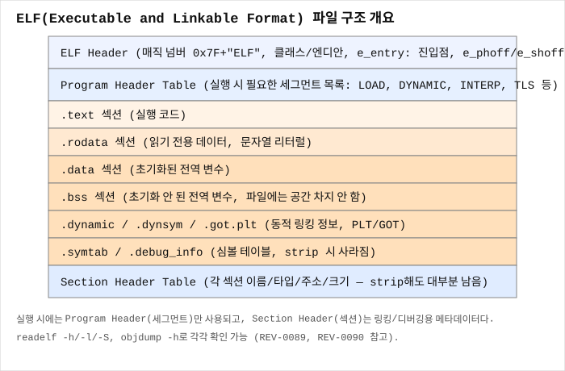

ELF 헤더 읽는 법
한 줄 요약
모든 ELF 파일은 맨 앞 64바이트(64비트 기준)에 ELF 헤더를 갖고 있으며, 이 헤더가 "이 파일이 어떤 아키텍처용인지, 실행 시작 주소가 어디인지, Program Header/Section Header가 파일 어디에 있는지"를 알려주는 지도 역할을 한다.
언제 검색해야 하나
readelf -h ./chall결과에 나오는 필드들(e_type,e_machine,Entry point address등)이 각각 무엇을 뜻하는지 모를 때- 파일이 32비트인지 64비트인지, 실행 파일인지 공유 라이브러리인지 헤더만 보고 판단하고 싶을 때
- 바이너리를 직접 hex editor로 열었을 때 맨 앞의
7F 45 4C 46같은 바이트가 뭔지 궁금할 때 - IDA/Ghidra 없이도 커맨드라인만으로 바이너리의 기본 정보를 빠르게 파악하고 싶을 때
핵심 개념
ELF 헤더가 하는 일
ELF(Executable and Linkable Format)는 Linux의 실행 파일, 공유 라이브러리(.so), 오브젝트 파일(.o), core dump가 공통으로 쓰는 파일 포맷이다. 이 파일을 로더(ld.so)나 커널이 읽어서 메모리에 올리려면, 먼저 "이 파일이 몇 비트짜리고, 어떤 CPU용이고, 실행을 어디서 시작해야 하는지"를 알아야 한다. 이 정보가 파일 맨 앞의 ELF 헤더에 고정된 구조체 형태로 들어 있다.
64비트 ELF 기준으로 헤더 크기는 정확히 64바이트이며, 이 구조는 /usr/include/elf.h의 Elf64_Ehdr에 정의되어 있다:
typedef struct {
unsigned char e_ident[16]; // 매직 넘버 + 기본 정보
Elf64_Half e_type; // 파일 종류 (EXEC, DYN, REL, CORE...)
Elf64_Half e_machine; // 대상 아키텍처
Elf64_Word e_version; // ELF 버전 (항상 1)
Elf64_Addr e_entry; // 진입점(entry point) 가상 주소
Elf64_Off e_phoff; // Program Header Table의 파일 오프셋
Elf64_Off e_shoff; // Section Header Table의 파일 오프셋
Elf64_Word e_flags; // 아키텍처별 플래그
Elf64_Half e_ehsize; // ELF 헤더 자체의 크기
Elf64_Half e_phentsize; // Program Header 엔트리 하나의 크기
Elf64_Half e_phnum; // Program Header 엔트리 개수
Elf64_Half e_shentsize; // Section Header 엔트리 하나의 크기
Elf64_Half e_shnum; // Section Header 엔트리 개수
Elf64_Half e_shstrndx; // 섹션 이름 문자열 테이블의 인덱스
} Elf64_Ehdr;e_ident: 맨 앞 16바이트
- 바이트 0~3: 매직 넘버
7F 45 4C 46— ASCII로\x7fELF. 이 4바이트가 없으면 파일이 ELF가 아니다.file명령과readelf모두 이 매직으로 파일을 식별한다. - 바이트 4: EI_CLASS —
1이면 32비트(ELFCLASS32),2이면 64비트(ELFCLASS64). - 바이트 5: EI_DATA —
1이면 리틀 엔디안(대부분의 x86/x64/ARM),2이면 빅 엔디안. - 바이트 6: EI_VERSION — 항상
1. - 바이트 7: EI_OSABI — 대상 OS/ABI. 대부분
0(System V, 사실상 Linux 기본값)으로 되어 있어 실제로는 큰 의미가 없는 경우가 많다. - 바이트 8: EI_ABIVERSION — 보통
0. - 바이트 9~15: 패딩(사용 안 함, 항상 0).
e_type: 파일이 실행 파일인지, 라이브러리인지
ET_EXEC(2): 고정 주소에 로드되는 전통적인 실행 파일 (non-PIE).ET_DYN(3): PIE(Position-Independent Executable) 실행 파일이거나 공유 라이브러리(.so). 최신 배포판의 기본 컴파일 결과는 거의 다ET_DYN이다. 주의:ET_DYN이라고 해서 무조건 라이브러리는 아니다 — PIE 실행 파일도ET_DYN으로 표시되며, 이 둘은 Program Header의INTERP세그먼트(있으면 실행 파일, 없으면 순수 라이브러리) 유무로 구분한다.ET_REL(1): 링크되지 않은 오브젝트 파일(.o).ET_CORE(4): core dump 파일(REV-0113 참고).
e_machine: 대상 아키텍처
readelf 출력에는 사람이 읽기 쉬운 이름으로 나온다. 흔히 보는 값:
EM_X86_64(62) →Advanced Micro Devices X86-64EM_386(3) →Intel 80386(32비트 x86)EM_ARM(40),EM_AARCH64(183)
e_entry: 진입점 주소
프로세스가 실행을 시작하는 가상 주소다. 일반적으로 _start 함수의 주소이며(REV-0098 참고), main이 아니다. PIE 바이너리라면 이 값은 실제 로드 베이스 기준 오프셋으로 취급되어, 실행 시 ASLR로 정해진 베이스 주소에 더해진 곳이 진짜 실행 시작 주소가 된다.
e_phoff / e_shoff: 두 헤더 테이블의 위치
ELF 헤더 자체에는 세그먼트/섹션의 상세 정보가 없다. 대신 "Program Header Table이 파일의 몇 바이트 지점에서 시작하는지"(e_phoff)와 "Section Header Table이 몇 바이트 지점에서 시작하는지"(e_shoff)만 가리킨다. 실제 세그먼트/섹션 목록은 그 오프셋으로 가서 별도로 읽어야 한다 — 이 둘의 차이는 REV-0090에서 자세히 다룬다.

화면/코드에서 보이는 징후
- hex editor로 파일을 열었을 때 첫 4바이트가
7F 45 4C 46 readelf -h,file명령이 정상적으로 "ELF 64-bit ..." 형태의 정보를 출력함- IDA/Ghidra가 파일을 로드할 때 자동으로 아키텍처와 비트수를 인식(이 정보의 출처가 바로 ELF 헤더)
가장 먼저 할 것
바이너리를 받으면 분석 도구를 열기 전에 먼저 file ./chall과 readelf -h ./chall부터 실행한다. 몇 초 안에 32/64비트, 아키텍처, PIE 여부, entry point 주소를 전부 파악할 수 있어서, 이후 IDA/Ghidra 설정(비트수 선택 등)에서 헤매지 않는다.
단계별 절차
1) 매직 넘버와 클래스만 빠르게 확인 (hex 덤프)
xxd -l 20 ./chall출력 예:
00000000: 7f45 4c46 0201 0100 0000 0000 0000 0000 .ELF............
00000010: 0300 3e00 ..>.7f 45 4c 46 = ELF 매직, 다음 바이트 02 = 64비트, 01 = 리틀 엔디안. 그 다음 03 00(e_type=3=ET_DYN), 3e 00(e_machine=0x3e=62=x86-64)까지 hex만으로 읽을 수 있다.
2) readelf로 전체 헤더 확인
readelf -h ./chall출력 예:
ELF Header:
Magic: 7f 45 4c 46 02 01 01 00 00 00 00 00 00 00 00 00
Class: ELF64
Data: 2's complement, little endian
Version: 1 (current)
OS/ABI: UNIX - System V
ABI Version: 0
Type: DYN (Position-Independent Executable file)
Machine: Advanced Micro Devices X86-64
Version: 0x1
Entry point address: 0x1060
Start of program headers: 64 (bytes into file)
Start of section headers: 14344 (bytes into file)
Flags: 0x0
Size of this header: 64 (bytes)
Size of program headers: 56 (bytes)
Number of program headers: 13
Size of section headers: 64 (bytes)
Number of section headers: 31
Section header string table index: 303) 핵심 3가지만 빠르게 뽑아보기
readelf -h ./chall | grep -E 'Type|Entry|Machine'Type: DYN → PIE 여부 확인, Entry point → REV-0097/REV-0098에서 다룰 시작 주소, Machine → 아키텍처.
명령어/단축키
file ./chall # 요약 정보 (REV-0095)
readelf -h ./chall # ELF 헤더 전체
readelf -h ./chall | head -20
xxd -l 64 ./chall # 헤더 64바이트 raw hex출력 해석
Type: EXEC→ non-PIE, 고정 주소 로드. IDA/GDB에서 주소가 실행마다 항상 동일.Type: DYN→ PIE 또는.so. ASLR이 켜져 있으면 매 실행마다 로드 베이스가 달라지므로, GDB에서 본 절대 주소를 그대로 IDA 정적 주소와 비교하면 안 되고 오프셋으로 환산해야 한다.Entry point address가0x0이면 대개 이 파일은 실행 목적이 아닌 오브젝트 파일(ET_REL)이거나 특이 케이스다.Number of program headers가0이면 커널이 이 파일을 프로세스로 실행할 수 없다(세그먼트 매핑 정보 없음) —.o파일이거나 손상된 파일일 가능성.
흔한 실수
Entry point address를main의 주소로 착각하는 것 — 실제로는_start의 주소다(REV-0097, REV-0098 참고).- PIE 바이너리(
Type: DYN)의Entry point를 GDB에서 실행 중 확인한 절대 주소와 그대로 비교하는 것 — PIE는 로드 베이스가 매번 바뀌므로info proc mappings로 실제 베이스를 확인하고 오프셋을 빼야 정적 분석 주소와 맞는다. - 32비트 헤더 구조(
Elf32_Ehdr)와 64비트 구조(Elf64_Ehdr)의 필드 크기가 다르다는 걸 모르고 hex 오프셋을 고정값으로 외우는 것 —EI_CLASS바이트를 먼저 확인해야 한다.
막혔을 때 다음 체크
- Program Header와 Section Header의 차이가 헷갈리면 → REV-0090 ELF Program Header와 Section Header 차이
readelf자체의 다른 옵션들이 궁금하면 → REV-0091 readelf 기본 사용법- Entry point에서
main까지 어떻게 이어지는지 궁금하면 → REV-0097 ELF Entry Point에서 main까지 - 파일이 ELF인지조차 확신이 안 서면 → REV-0095 file 명령으로 ELF 정보 확인
미니 예제
$ file chall
chall: ELF 64-bit LSB pie executable, x86-64, version 1 (SYSV), \
dynamically linked, interpreter /lib64/ld-linux-x86-64.so.2, ...
$ readelf -h chall | grep -E 'Type|Entry point|Machine'
Type: DYN (Position-Independent Executable file)
Machine: Advanced Micro Devices X86-64
Entry point address: 0x1060이 결과만으로 "64비트 x86-64용 PIE 실행 파일, entry는 파일 내부 오프셋 0x1060"이라는 걸 IDA를 열기 전에 이미 알 수 있다.
관련 글
- REV-0090 — ELF Program Header와 Section Header 차이
- REV-0091 — readelf 기본 사용법
- REV-0095 — file 명령으로 ELF 정보 확인
- REV-0097 — ELF Entry Point에서 main까지
- REV-0100 — PLT와 GOT 기초
출처/검증
- ELF 헤더 구조체 정의: System V Application Binary Interface (generic ABI), Chapter "ELF Header" 기준 (2026-09-08 검증).
- Linux
elf.h헤더 필드 정의: glibc/Linux 커널elf.h기준. readelf출력 형식: GNU binutilsreadelf(1)man page 및 실측 기준.